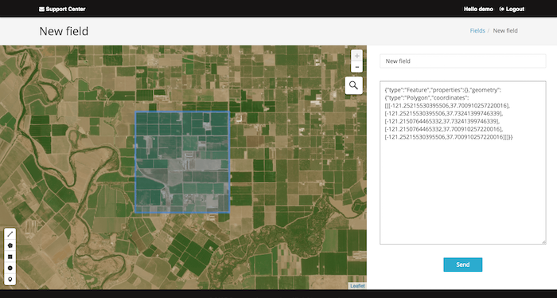
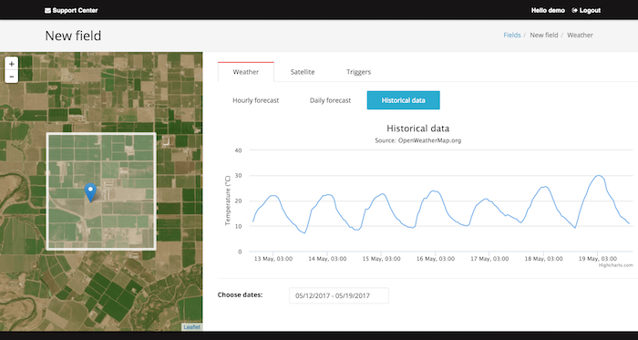
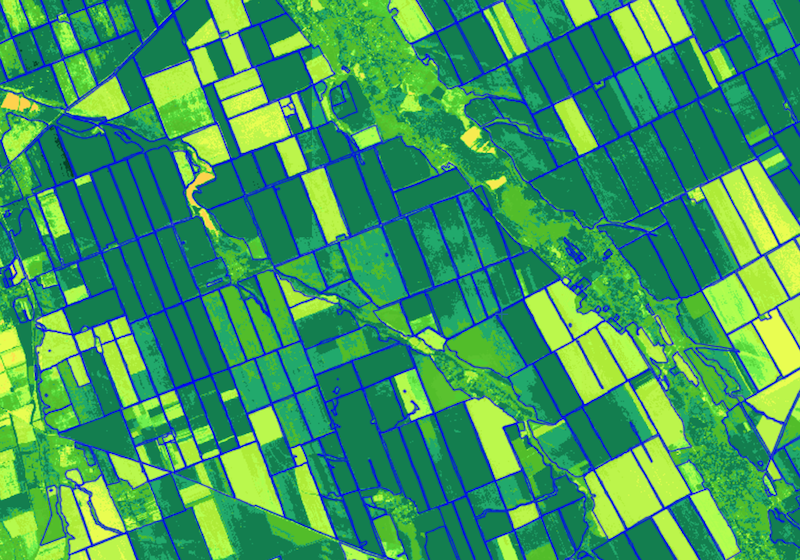

vane:
geospatial platform for online processing of satellite and weather dataHow to create your own Agriculture application?
VANE Query language
SQL fashioned API for intuitive queries to process and get data - ex. get NDVI by polygon
http://sat.owm.io/sql?from=s2&select=b8,b4&where=day=2016-07-10&op=ndvi&polygon={%22type%22:%22Feature%22,%22geometry%22:{%22type%22:%22Polygon%22,%22coordinates%22:[[[-102.73,34.43],[-102.73,34.49],[-102.57,34.49],[-102.57,34.43],[-102.73,34.43]]]}}&APPID={APIKEY}
Satellite images - indexed maps
Near-infrared and red spectral bands are used to calculate and monitor health vegetation growth. NDVI is strongly important for agriculture and Farm management applications.
Use op=NDVI to apply operation to any two of spectral bands.
Combine weather and NDVI maps:
NDVI Base Map (API)
http://sat.owm.io/sql/{z}/{x}/{y}?select=b8,b4&from=s2&op=ndvi&order=last&APPID={APIKEY}
History weather (API)
http://history.openweathermap.org/data/2.5/history/city?lat={lat}&lon={lon}&type=hour&start={start}&end={end}&APPID={APIKEY}
Developers can also calculate vegetation using Python
#Connect VANE lib
from vane import sql
# Define polygon
polygon = '{"type":"Feature","geometry":{"type":"Polygon","coordinates":[[[-101.85,36.04],[-101.85,36.15],[-101.64,36.15],[-101.64,36.04],[-101.85,36.04]]]}}'
# Define date
day = '2016-07-18'
# Read the first band data
x = sql.raw( select="b5", where="day:"+ day, polygon=polygon)
# Read the second band data
y = sql.raw( select="b4", where="day:"+ day, polygon=polygon)
# NDVI computing
ndvi = (x-y)/(x+y)
Cases of OpenWeather products in agricultural applications
|
Current weather, short-term and long-term forecast for area of interest (AOI) Current weather and forecast calculated for specific crop for planning of agricultural activity depends on meteorological conditions. Fundamental weather parameters are provided via APIs or maps (precipitations, humidity, air pressure, temperature, wind, clouds, snow). Additional parameters like dew point can be calculated based on fundamental parameters and their deviation during a day |
  |
|
Historical weather for season dynamic A set of historical data allows you to calculate the accumulated indicators for a season (the sum of the active temperatures and the amount of accumulated precipitation), which have a direct impact on the growth of culture. Historical weather data for 5 years allow you to analyse and compare the results with satellite images, the vegetation index, and actual indicators. Calculation of accumulated indicators for the specified period (temperature and precipitation) is based on monitoring of main indicators (temperature, humidity, precipitation) |
Learn more from cases of our subscribers, including Google. |
|
Monitoring of crop variable rates with satellite imagery Operational and historical satellite images with different resolution allow assessing of the homogeneity of the cultivated areas. NDVI, EVI and other agricultural indices with unlimited customization of color schemes. |

|